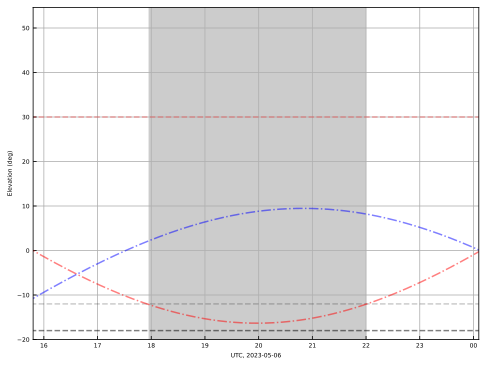

Sunset: 2023-04-12 14:59, sunrise:2023-04-13 01:05
TESS transits with depth>7.0mmag and Vmag<14.0
Moon phase is 55.70174026489258%.
| Target | Coord | Start(UTC) | Duration(h) | Depth(mmag) | Vmag | Exp(s) | 2Moon(d) |
|---|---|---|---|---|---|---|---|
| TIC281196902_01 | 04:38:59.37 +66:40:16.18 | 2023-04-12 16:43:53 | 4.35 | 9.6 | 12.8 | 180 | 135.01 |
| TIC81247877_01 | 13:41:57.33 +17:17:59.69 | 2023-04-12 17:19:27 | 3.7 | 28.2 | 13.0 | 180 | 90.3 |
| TIC307956397_01 | 17:06:38.98 +63:46:42.88 | 2023-04-12 17:19:19 | 3.65 | 9.5 | 13.9 | 180 | 94.33 |
| TIC420268415_01 | 20:33:42.35 +87:00:33.49 | 2023-04-12 16:46:29 | 4.9 | 12.1 | 12.2 | 180 | 114.8 |
| TIC376632626_01 | 12:50:56.76 +30:41:09.43 | 2023-04-12 18:19:13 | 3.85 | 17.1 | 13.9 | 180 | 107.16 |
| TIC307734818_01 | 11:26:23.17 +28:03:29.19 | 2023-04-12 19:13:22 | 3.25 | 36.4 | 13.5 | 180 | 124.06 |
| TIC154126149_01 | 14:09:58.53 +70:03:55.75 | 2023-04-12 20:27:40 | 2.85 | 9.8 | 13.1 | 180 | 111.03 |